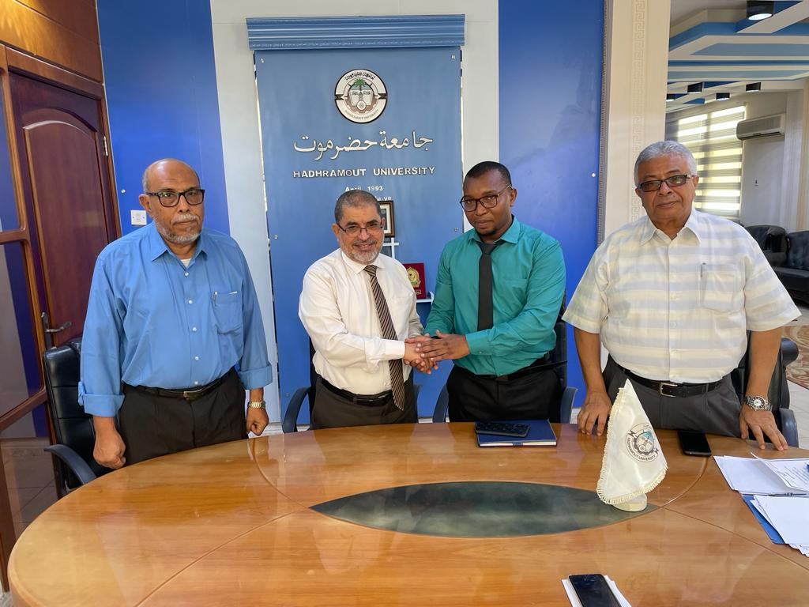

Dr. Musa Mwachadu Shauri is a dedicated educator with over a decade of experience in teaching Islamic studies. His journey began at Madrasatul Munawwarah in Kenya, where he served as an examination officer and head of academics. He later became an Islamic Studies Lecturer at Munawwarah College before assuming his current role as an Islamic Teacher at Al-Ahgaaf International School in Yemen. Dr. Shauri holds a Doctorate in Educational Administration from the Islamic University of Minnesota, along with a Master’s Degree in Educational Administration and a Bachelor’s Degree in Education. He is also proficient in business information technology and possesses a diverse array of skills, including project management and decision-making. Dr. Shauri is multilingual, with proficiency in Swahili, English, and Arabic. Outside of academia, he enjoys socializing, planning Islamic projects, conducting research, and participating in swimming and biking. Dr. Musa embodies diligence and determination in every aspect of his life, constantly seeking to broaden his horizons and make a meaningful impact in the world.
Dr. Musa embodies the essence of diligence and determination in every facet of his life. A relentless pursuit of excellence characterizes his journey, whether in the field of medicine or beyond. Endowed with an insatiable thirst for knowledge, he tirelessly immerses himself in his work, constantly seeking to broaden his horizons and refine his skills. Driven by an unwavering commitment to his goals, he tackles challenges with unwavering resolve, viewing each obstacle as an opportunity for growth. His perseverance knows no bounds, as he devotes countless hours to his endeavors, fueled by a passion for making a meaningful impact in the world. Dr. Musa's dedication, resilience, and tenacity serve as an inspiration to all who have the privilege of crossing paths with him, embodying the very essence of perseverance and the pursuit of excellence.